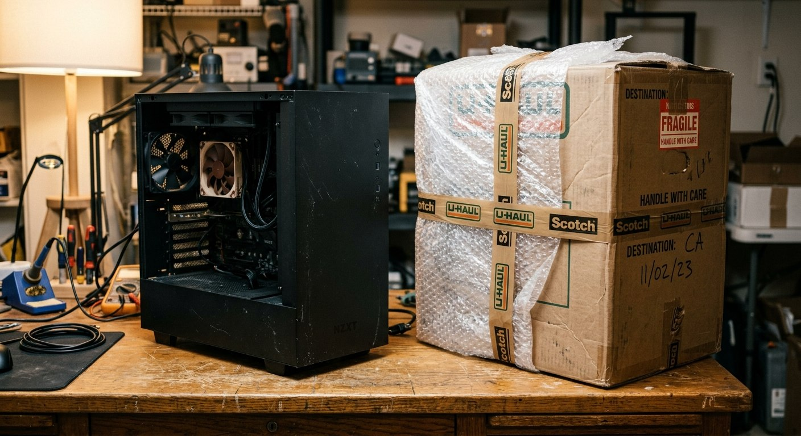
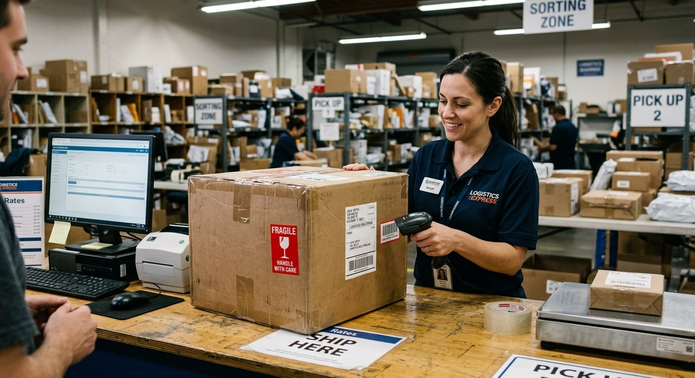
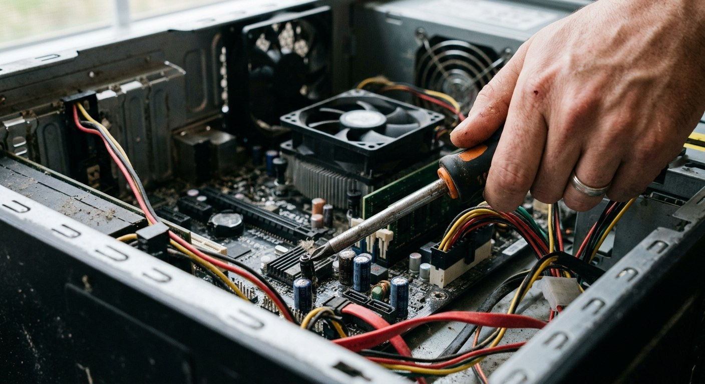

Решил я тут обновить рабочий стол. Собрался переходить на компактный Mac mini, а старый верный системный блок на Windows выставил на продажу. Компьютер собирал с душой, для себя: бодрый Ryzen, свежий блок питания, скоростной SSD, 16 гигабайт оперативки. Все компоненты ставил профессионал, термопаста свежая, система вылизана.
Поставил адекватный ценник в районе двадцати тысяч. Покупатель нашелся быстро. Пишет мужчина: «Беру сыну в подарок, всё устраивает, только один нюанс. У нас лежит своя мощная видеокарта. Можете снять вашу и сделать скидку?»
Дело житейское. Снял я свою карту (RX 580 на 8 ГБ), скинул ему за нее шесть тысяч, карту в тот же день выставил отдельно. Компьютер проверил на встроенном видеоядре, накатил чистую систему с нуля, упаковал.
Покупатель оформил Авито Доставку. И вот тут начался первый акт цирка.
Акт 1. Коробка из чистого золота
Прихожу в отделение службы доставки с системником. Говорю: «Мне бы отправить системный блок, упакуйте по-человечески».
Оператор смотрит на габариты корпуса и не моргнув глазом выдает:
— С вас 2 500 рублей за коробку.
Я на секунду завис. У меня системник без карты стоит около двадцати тысяч. Авито берет комиссию с продажи, берет комиссию за доставку. И сверху мне предлагают отдать две с половиной тысячи рублей за… кусок формованного гофрокартона!
В общем, первый совет всем, кто продает системники с пересылом: ищите и клейте коробку с пенопластом дома. Не надейтесь на пункт отправки, если не хотите оплачивать им золотой картон.

Акт 2. Главная дыра любой доставки
Компьютер уехал куда-то в сторону Севера. Я тем временем уже получил свой Mac, подключил и радовался тишине.
Но пока посылка ехала, я поймал себя на мысли о колоссальной дыре в правилах. Свой Mac mini я забирал в пункте Яндекса, системник отправил другой службой. Но регламент у всех партнерских ПВЗ Авито абсолютно одинаковый:
Включать технику в розетку при получении категорически запрещено.
Вам дают вскрыть коробку, повертеть железку в руках и расписаться. Всё. То есть покупатель берет сложнейшее устройство за десятки тысяч рублей вслепую. А продавец отдает исправную технику на волю случая.
И случай не заставил себя ждать.
Акт 3. Экспертиза отвёрткой и «вы мошенник!»

Выходные. Я за городом, отдыхаю с семьей на природе. Телефон разрывается от уведомлений на Авито — штук десять сообщений подряд.
Открываю чат, а там форменная истерика:
«Вы прислали мертвый хлам! Компьютер не включается! Материнская плата залита термопастой, всё поцарапано, вы мошенник, верните деньги!»
Я пытаюсь спокойно выяснить, в чем дело. Пишу: проверьте провод питания, щелкните тумблер на блоке.
В ответ прилетает шедевр:
«Я снял крышку, замкнул контакты на плате отверткой — ничего не стартует! Ремонт тут минимум на 10 000 рублей, вы меня обманули!»
Представили картину? Человек забирает системник, дома тычет в материнку металлической отверткой, что-то там замыкает, а потом требует вернуть деньги.
Я в тот момент четко понял: принимать возврат нельзя ни в коем случае. Компьютер уже вскрыт. Что он там наковырял отверткой? Не вытащил ли процессор? Не подменил ли плашки памяти на битые заглушки? Если я нажму «оформить возврат», мне приедет разграбленный ящик с сожженными цепями питания.
Я вежливо ответил: «Компьютер перед отправкой был полностью проверен и обслужен. Если при транспортировке что-то растряслось — отнесите в сервис к специалисту. Если мастер найдет поломку — будем разбираться». В ответ полились оскорбления. Разговаривать на языке мата я не стал и отправил покупателя в черный список.
Акт 4. Сообщение от мастера
Проходит пара дней. Мне в другое, совершенно левое объявление на Авито пишет неизвестный аккаунт:
«Здравствуйте. Вы отправляли системный блок такому-то человеку? Не переживайте, я мастер из сервиса, куда он его принес. Компьютер в идеальном состоянии. При перевозке просто слегка отошел контакт. Я поправил шлейф за две минуты, всё запустилось. Клиент у вас просто чересчур панику навел, вашей вины тут нет».
Я выдохнул, поблагодарил нормального мужика-мастера за человечность и закрыл гештальт.
А еще через день мне прилетает отзыв на одну звезду. Огромное полотно текста, где покупатель, уже зная, что ПК рабочий, называет меня вором, мошенником и прямым текстом пишет мои фамилию и имя. То есть мастеру он отдал копейки за поправленный контакт, но обида за то, что продавец не повелся на шантаж, осталась.
К чести поддержки Авито: после обращения и предоставления фактов отзыв с клеветой и личными данными был заблокирован и удален.
Три правила выживания при продаже ПК
Если вы продаете системный блок с доставкой в другой город, запомните это как «Отче наш»:
- Снимайте видео упаковки одним непрерывным дублем. В кадре компьютер должен работать, зайти в BIOS, показать серийные номера материнки и процессора. Затем на камеру штатно выключаете, отсоединяете провода, кладете демпферы внутрь корпуса (чтобы не болтался кулер) и запечатываете коробку. Без этого видео оспорить претензии неадекватов нереально.
- Никаких возвратов «на словах» после вскрытия крышки. Если покупатель полез внутрь с отверткой — гарантия заканчивается в эту же секунду. Только официальный акт сервисного центра.
- Пакуйте сами. Не кормите пункты выдачи коробками по цене бюджетного кулера.
Свой Mac mini на замену я получил целым и невредимым, но осадочек от продажи системника остался. Пересылать сложное железо по стране сегодня — это игра в русскую рулетку, где правила площадки играют против вас обоих.